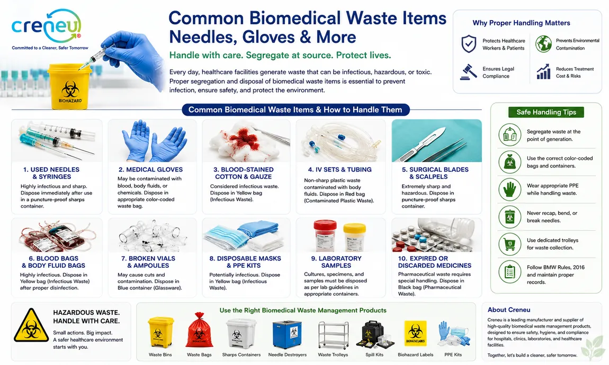
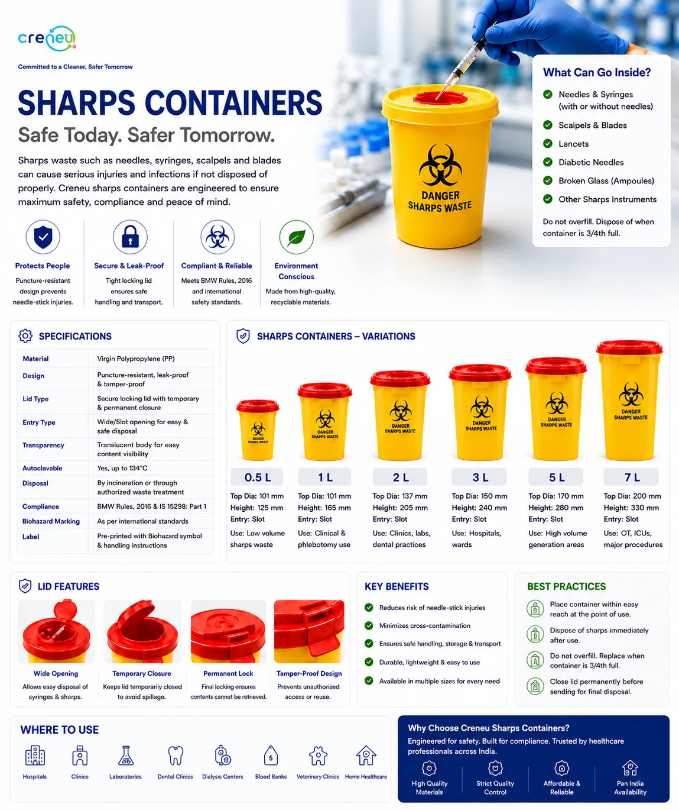
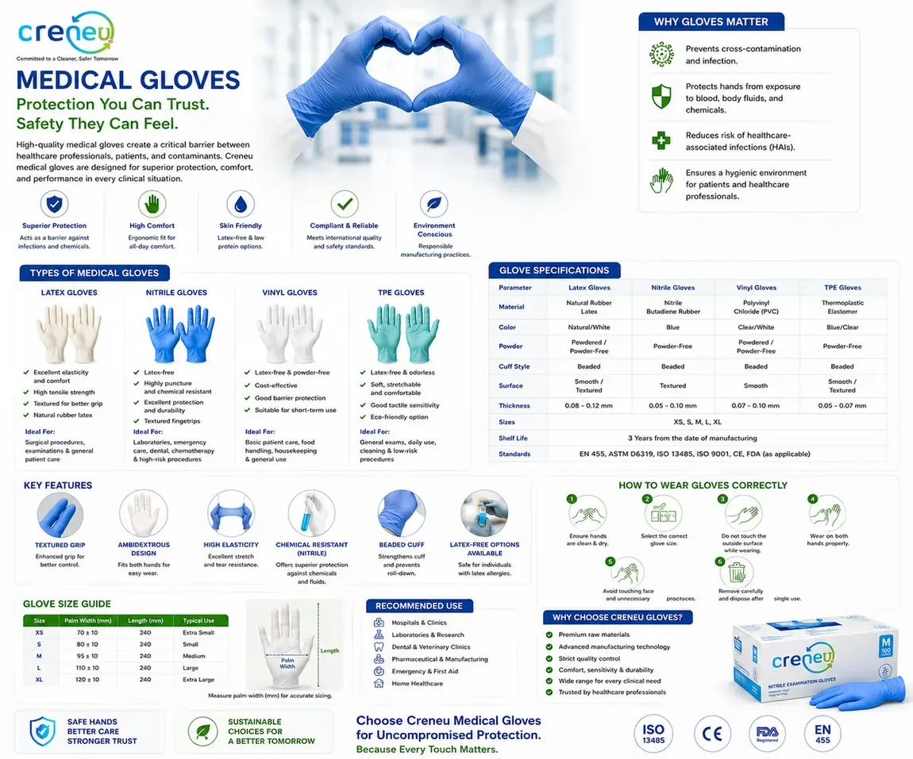

Practical guides on biomedical waste handling, sharps safety, medical gloves and surgical disposables — built from CRENEU® product expertise.
Biomedical Waste
Common Biomedical Waste Items
Handle with care. Segregate at source. Protect lives.
Every day, healthcare facilities generate waste that can be infectious, hazardous or toxic. Proper segregation and disposal of biomedical waste items is essential to prevent infection, ensure safety and protect the environment. This guide covers the ten most common waste items found in hospitals and clinics — from used needles and blood bags to expired medicines — and exactly which colour-coded stream each belongs in.
Used needles & syringes — dispose immediately in a puncture-proof sharps container.
Blood-stained cotton & gauze — infectious waste, goes into the Yellow bag.
IV sets & tubing — contaminated plastic waste, goes into the Red bag.
Broken vials & ampoules — glassware, goes into the Blue container.
Expired or discarded medicines — pharmaceutical waste, goes into the Black bag.
Never recap, bend or break needles, and always maintain records as per BMW Rules, 2016.

Click the infographic to view it full size
Sharps Containers
Sharps Containers
Safe Today. Safer Tomorrow.
Sharps waste such as needles, syringes, scalpels and blades can cause serious injuries and infections if not disposed of properly. CRENEU® sharps containers are engineered from virgin polypropylene with puncture-resistant, leak-proof and tamper-proof construction — available from 0.5 L for low-volume phlebotomy right up to 7 L for operation theatres and ICUs.
Six sizes — 0.5 L, 1.1 L, 2 L, 3.5 L, 6.5 L and 7 L to match every generation point.
Autoclavable up to 134°C and pre-printed with the biohazard symbol.
Four-stage lid — wide opening, temporary closure, permanent lock and tamper-proof design.
Compliant with BMW Rules, 2016 and IS 15298: Part 1.
Golden rule: never overfill — replace the container once it is three-quarters full.

Click the infographic to view it full size
Medical Gloves
Medical Gloves
Protection You Can Trust. Safety They Can Feel.
High-quality medical gloves create a critical barrier between healthcare professionals, patients and contaminants. CRENEU® gloves are designed for superior protection, comfort and performance in every clinical situation — across four material types, each suited to different procedures and risk levels.
Latex — excellent elasticity and tensile strength; ideal for surgical procedures and general patient care.
Nitrile — latex-free, highly puncture and chemical resistant; ideal for laboratories, dental and chemotherapy.
Vinyl — cost-effective and powder-free; ideal for basic patient care, food handling and housekeeping.
TPE — soft, stretchable and eco-friendly; ideal for general exams and low-risk procedures.
Available in XS to XL with a 3-year shelf life, meeting EN 455, ASTM D6319, ISO 13485, ISO 9001, CE and FDA standards.

Click the infographic to view it full size
Surgical Disposables
Surgical Disposables
Hygienic. Reliable. Essential.
Surgical disposables are designed for single-use to ensure maximum hygiene, prevent cross-contamination and enhance patient and healthcare safety. CRENEU® supplies a complete range — from gloves, masks, caps, drapes and gowns through to syringes, IV cannulas, giving sets, urine bags, suction catheters, scalpel blades, sutures, disposable kits, face shields and shoe covers.
Prevents cross-contamination and hospital-acquired infections (HAIs).
Individually packed to maintain sterility until the moment of use.
Made from medical-grade materials — non-woven SSMMS/SMS/PP, medical grade PVC, latex/nitrile rubber, stainless steel and medical grade paper.
Time-saving and cost-effective — reduces reprocessing costs and infection-related expenses.
Remember: all used surgical disposables must go into the appropriate colour-coded bins as per BMW Rules, 2016.

 Hindi
Hindi French
French Dutch
Dutch Português
Português Malagasy
Malagasy Italiano
Italiano